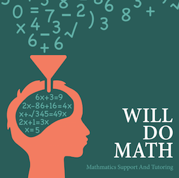

Mathmatics
SUPPORT AND TUTORING

This webpage was created to showcase this logo I created. It includes, but is not limited to, the process of creating the logo, rationale for color choices, appeal to target audience, and design skills.
Thinking Process For Logo Design:
- I used many different tools in Illustrator to create this logo. First I used the pen tool to create the head shape, then just used the type tool to make all the letters, transformed them into objects and moved them around.
- I chose the colors because I thought they look professional and friendly. I wanted it to have a friendly look to invite the students, through the orange, but the dark teal still has a chockboard, proffessional, educational look.
- The target audiance for "Will Do Math" would be the parents of students in middle School or High School. This logo appeals to them because it is professional enough for adults bur still looks fun enough for kids to enjoy. This will help parents trust the company with their children.
- I used the design skills to add balance to my logo. I made sure there was enough white space, used the rule of thirds. I also made sture it was simple enough and made my different typefaces contrast. I used a decorative for the numbers, and a oldstyle for the title.
- My husband, Will, is a Math Ed major and works in the Math Tutoring Lab. He was my insporation for this logo. I made sure to communicate with him and his co workers, as well as types of students who would want a tutor in math, to see what would make the logo more appealing.
More About My logo: Wordpress Blog